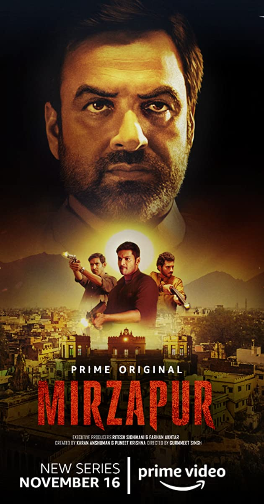
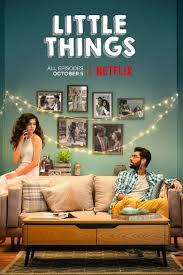
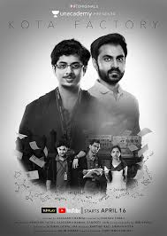

Indian TV Shows
Sacred Games (2018-2020)
"The righteous. The ruthless. Everyone wants to play."

Sartaj Singh, a Mumbai police officer, receives an anonymous phone call from a gangster who threatens to blow up the entire city. Amid the corrupt standards of Indian law enforcement begins a battle between a 'nobody' cop and ruthless gangster who perceives (sometimes) himself to be a God.
Genres : Drama,Action,Crime,Thriller
No. of Seasons: 2
Available on Netflix
Review: 8.7/10 ⭐
Mirzapur (2018- )
"Become what you fear."

The iron-fisted Akhandanand Tripathi is a millionaire carpet exporter and the mafia don of Mirzapur. His son, Munna, is an unworthy, power-hungry heir who will stop at nothing to inherit his father's legacy. An incident at a wedding procession forces him to cross paths with Ramakant Pandit, an upstanding lawyer, and his sons, Guddu and Bablu. It snowballs into a game of ambition, power and greed that threatens the fabric of this lawless city!
Genres : Drama,Action,Crime
No. of Seasons: 2
Available on Amazon Prime
Review: 8.5/10 ⭐
Little Things (2016- )
"We are not extraordinary people,we have to in fact have to work extra hard to make out everyday special."

Adulting is a coming of age story about two young women trying to handle the responsibilities of being independent adults in the fast-paced, urban bustle of Mumbai. Take a peek into the daily life and shenanigans of two twenty-something women: Ray and Nikhat, as they try to make it through adulthood in their own unique way
Genres : Drama,Comedy,Romance
No. of Seasons: 3
Available on Youtube,Netflix
Review: 8.2/10 ⭐
Kota Factory (2019)
"Stay Focused"

Dedicated to Shrimati SL Loney ji, Shri Irodov ji and Maanniya HC Verma ji, 'Kota Factory' is TVF's latest original. India's first 'Black and White' show highlights the problems present day IIT-JEE aspirants face in their day-to-day lives.
Genres : Drama,Crime
No. of Seasons: 1
Available on Youtube
Review: 8.1/10 ⭐
Adulting (2018-2019)
"Ray ray ray raaaaaaaaaaaay..."
Adulting is a coming of age story about two young women trying to handle the responsibilities of being independent adults in the fast-paced, urban bustle of Mumbai. Take a peek into the daily life and shenanigans of two twenty-something women: Ray and Nikhat, as they try to make it through adulthood in their own unique way
Genres : Drama,Comedy
No. of Seasons: 2
Available on Youtube
Review: 7.6/10 ⭐
Four More Shots Please(2019- )
"In life, if you don't a few risks, you haven't lived. So once in a while, take off those shoes, let go, and dance on the edge."
Journey of four unapologetically flawed women live,love,blunder and discover what really makes them tick through friendship and tequila in millennial Mumbai. They will make new mistakes, but love each other fiercely ad choose themselves over the society's expectation.
Genres : Comedy,Romance,Drama
No. of Seasons: 2
Available on Amazon Prime
Review: 5.5/10 ⭐
Back